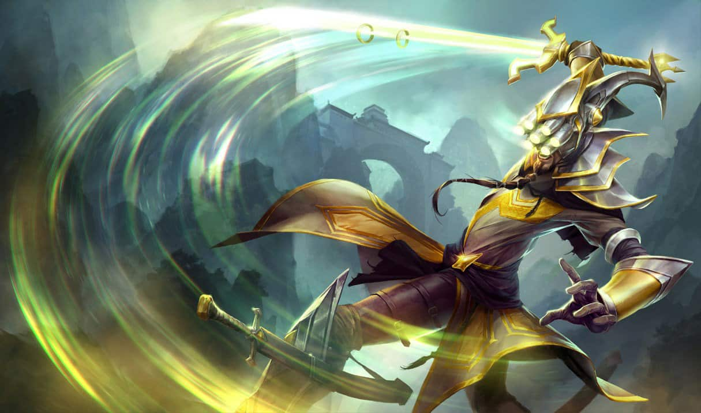

- 누누와 윌럼프
- 라이즈
- 마스터 이

주포지션: 정글
부포지션: 탑
역할군: 암살자, 전사
소속: 아이오니아
"제아무리 예리하게 벼린 검이라 해도 평온한 정신에는 당할 수 없소."
마스터 이는 수련을 통해 심신을 갈고 닦아, 마침내 생각과 행동이 일치하는 경지에 이르렀다.
최후의 수단으로 무력을 사용할 것을 결심하기는 했지만,
마스터 이는 품위 있고 빠른 검 놀림으로 자신의 결단을 언제나 빠르게 수행했다.
아이오니아의 우주류 검술의 살아있는 마지막 전승자인 마스터 이는
자신의 '통찰의 칠안경'과 함께 제자가 되려는 후보자 중 가장 적합한 자를 꼼꼼히 조사하는 등
고향의 유산을 이어가는 데에 일생을 바친다.